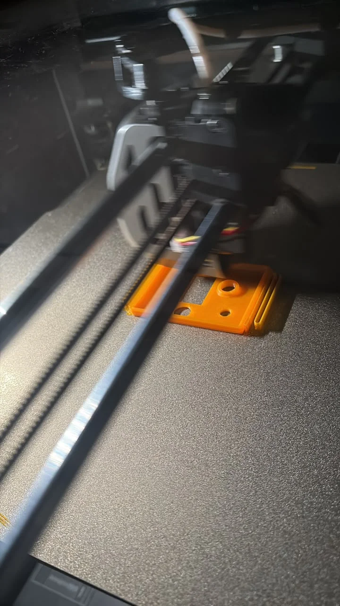
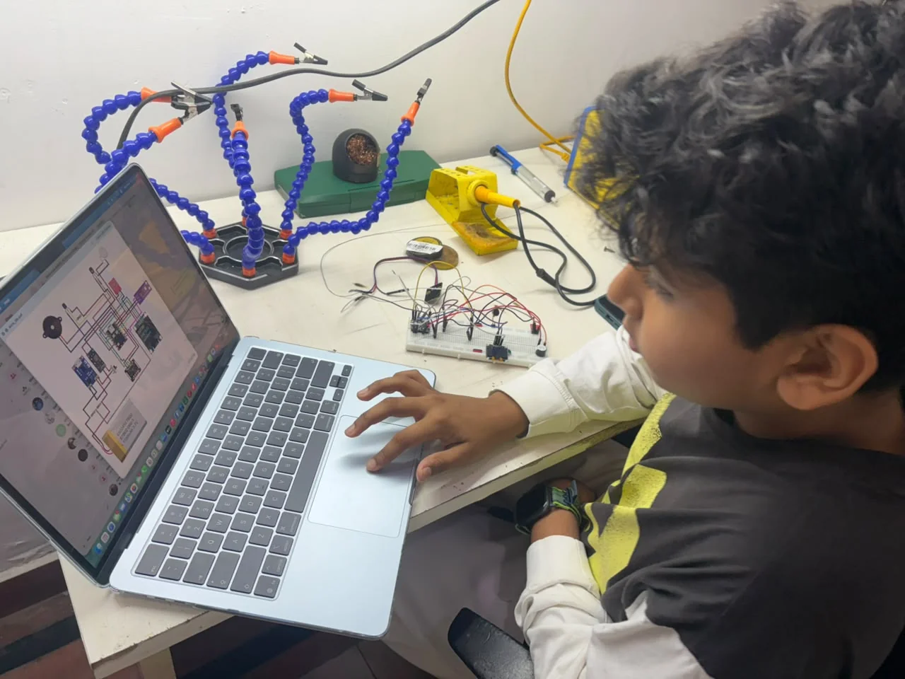
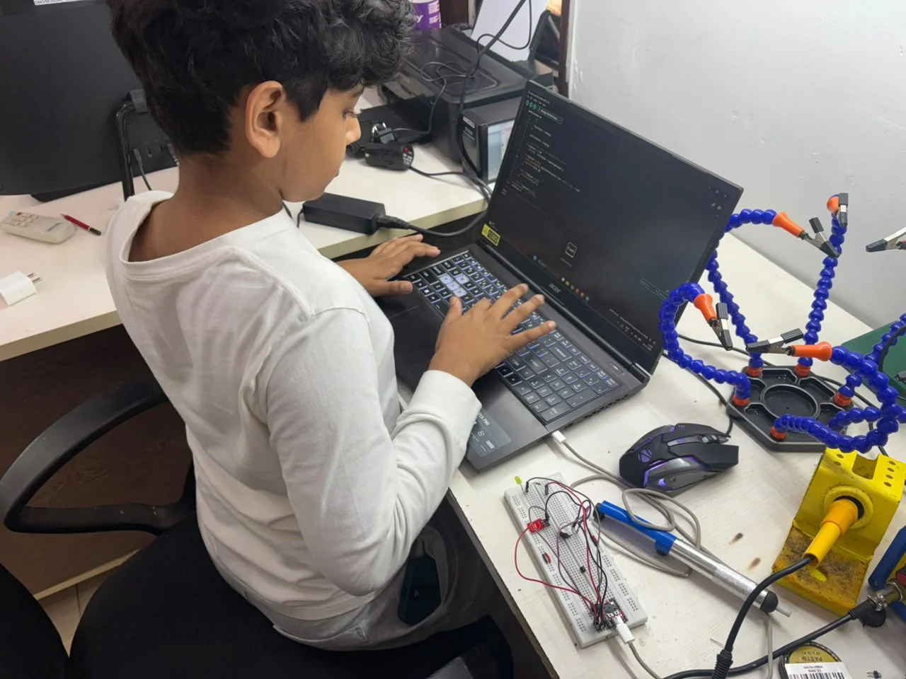
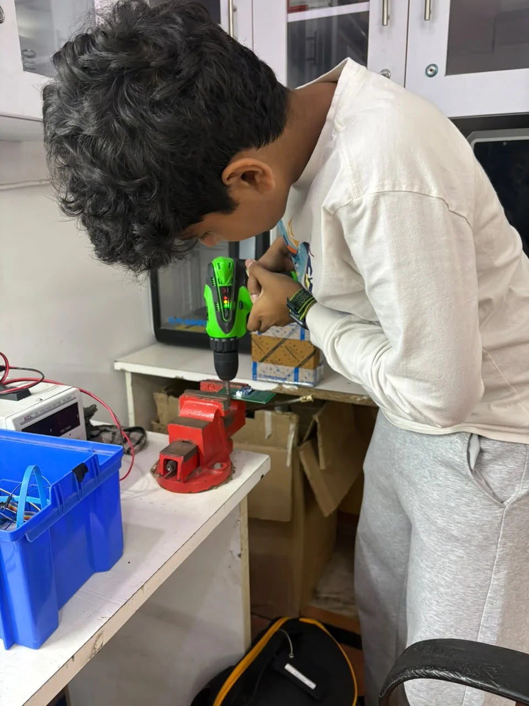
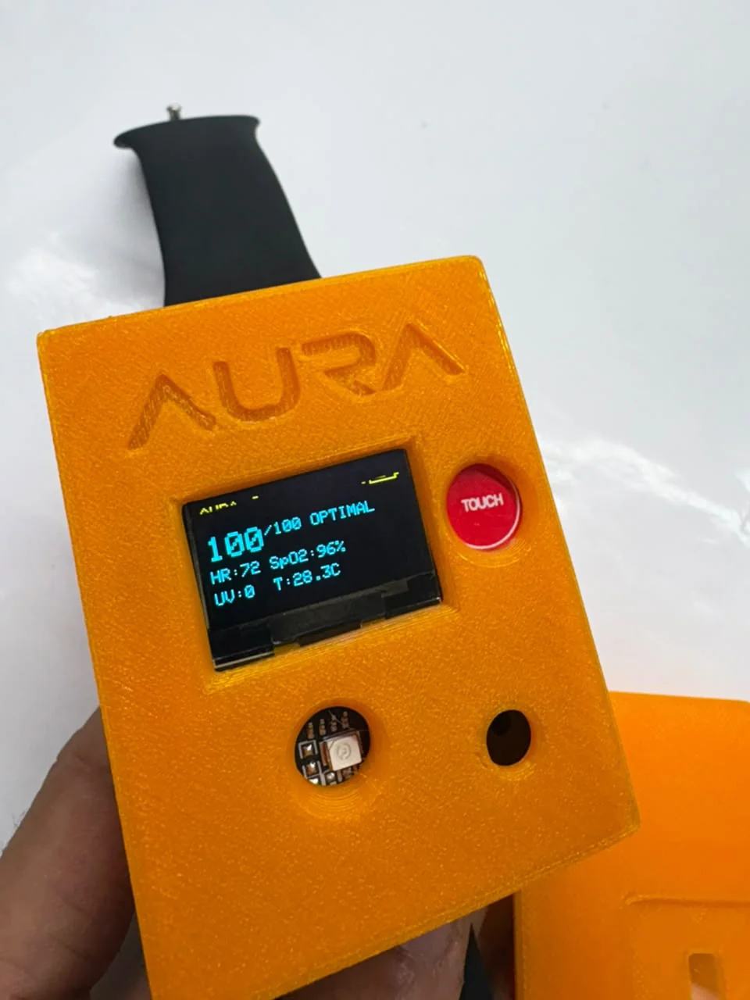
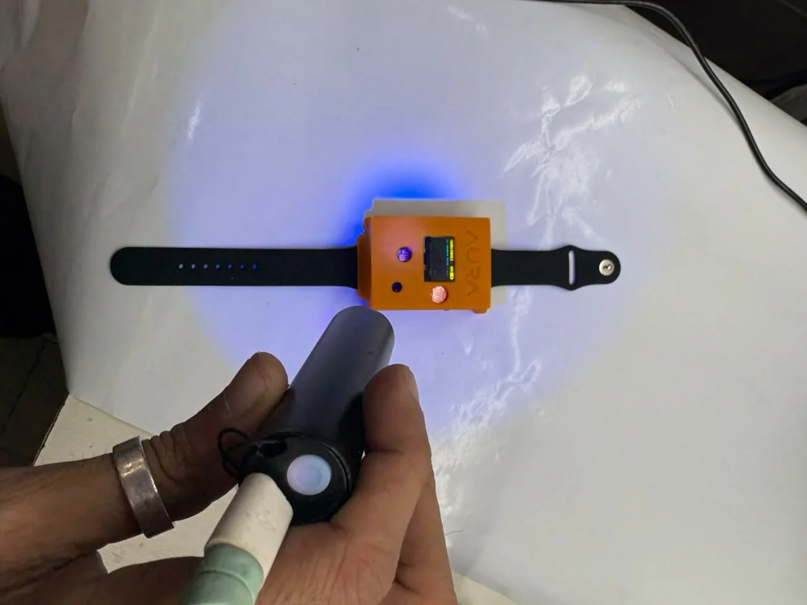
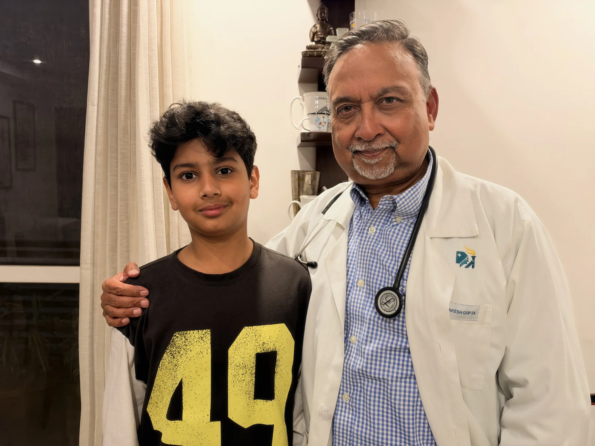
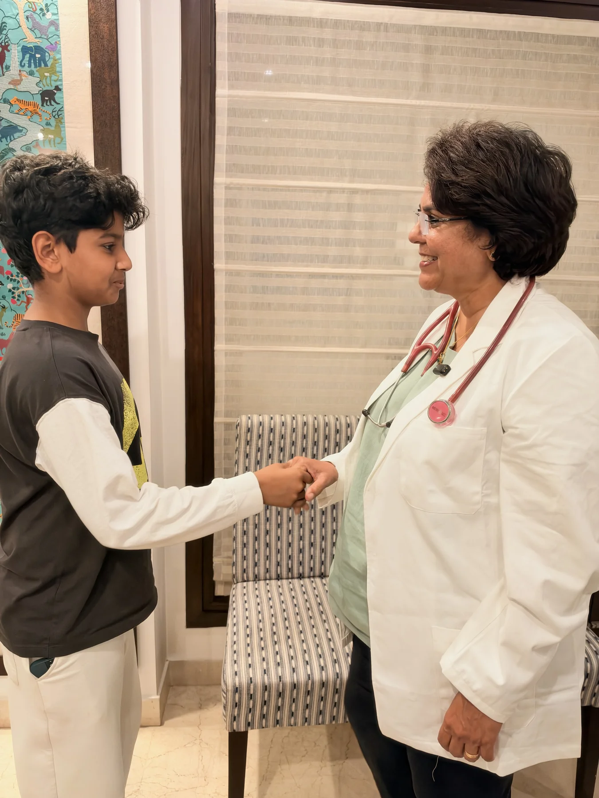
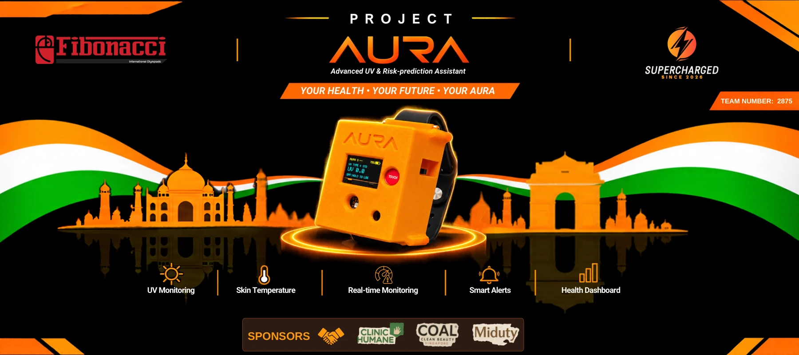
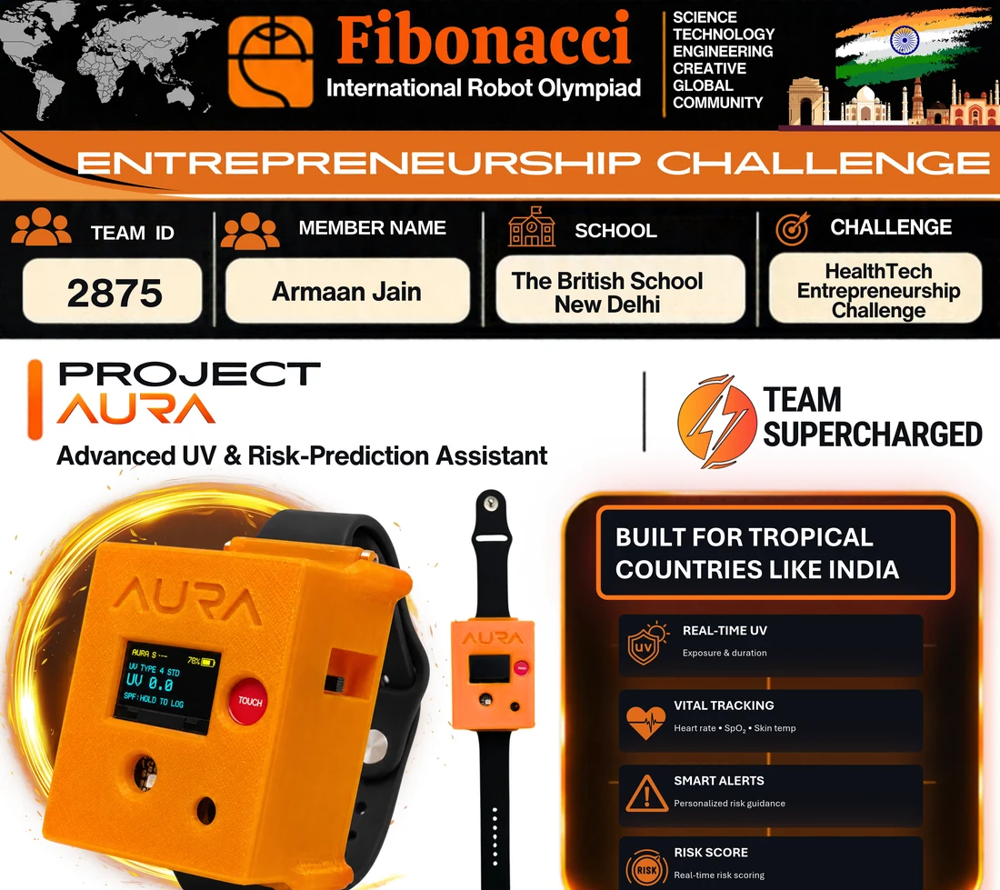

THE DEMONSTRATION
See the prototype in motion.
A project walkthrough can be added here.
From a question at home to circuits, code and an orange enclosure. This is AURA, in the making.
Explore the photo story

Explore the workbench, the prototype and the small moments in between.






A project walkthrough can be added here.
A project grows by trying, learning and asking better questions.
Start with an everyday problem and a question worth exploring.
Work through sensors, code, an enclosure and a phone interface.
Share the idea, gather feedback and keep improving the prototype.
AURA has been shared with medical professionals for discussion and feedback. These conversations do not establish clinical performance.


A video of the expert interaction will be added here.
More voices have helped shape the journey.
Read the lettersFrom a presentation board to the event banner and the little guide that brings the wearable to life.

The project’s presentation board.

A cropped view of the supplied banner.
Explore the screens, touch controls and phone companion. The guide’s cover retains the requested QR, sponsor and team-detail placeholders.
Download the guideThese presentation materials describe the project’s goals. AURA is an experimental prototype; see the wearable page for its current functions and limitations.